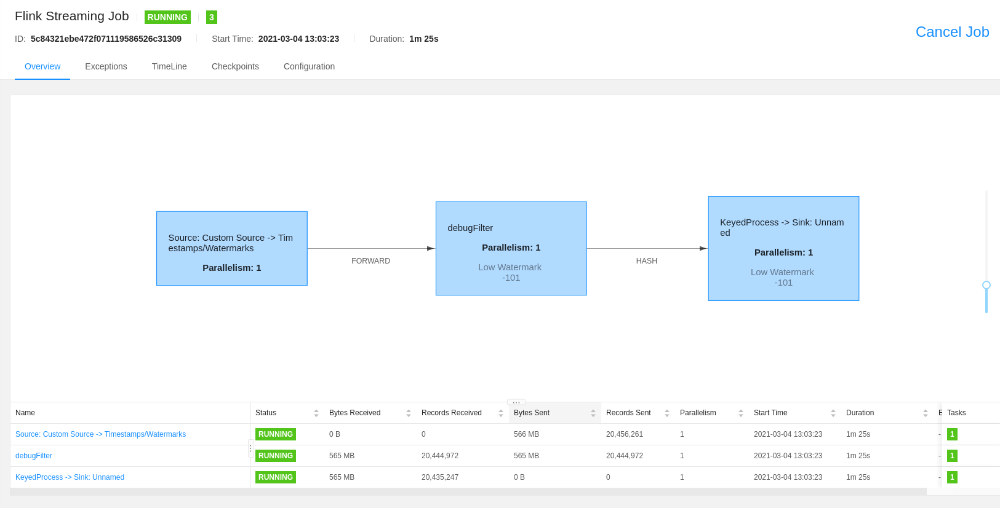
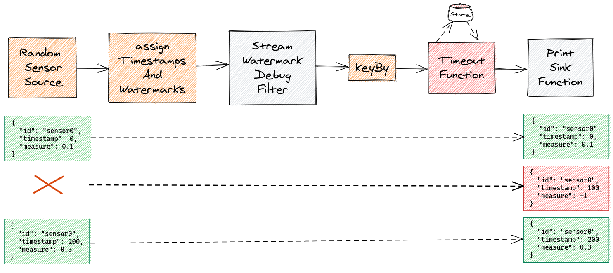

How to build and debug a Flink pipeline based in Event Time
28 February 2021
Introduction
One of the most important concepts for stream-processing frameworks is the concept of time. There are different concepts of time:
- Processing time: it's the time-based on the clock of the machine where the event is being processed. It's easy to use but because that time changes when the job is executed, the result of the job isn't consistent. Each time you execute the job, you may have different results. This isn't an acceptable trade-off for many use cases.
- Event time: it's the time-based on some of the fields in the event, typically a timestamp field. Each time you execute the pipeline with the same input, you obtain the same result which it's a good thing. But it also tends to be a bit harder to work with it for several reasons. We'll cover them later in the article.
- Ingestion time: it's based on the timestamp when the event was ingested in the streaming platform (Kafka) and it usually goes in the metadata. From a Flink perspective, we can consider it a particular mix of Event time and processing time with the disadvantages of both.
Apache Flink has excellent support for Event time processing, probably the best of the different stream-processing frameworks available. For more information, you can read Notions of Time: Event Time and Processing Time in the official documentation. If you prefer videos, Streaming Concepts & Introduction to Flink - Event Time and Watermarks is a good explanation.
In this article, we'll take a look at Event time based pipelines and also to some common problems and misunderstandings working on this type of pipelines.
Timestamps and watermarks
When we speak about timestamps in Flink, we are referring to a particular field in the event. We can extract it and make it available to Flink so it knows what's the actual time from the pipeline perspective. The format expected by Flink is Unix time, specified as milliseconds since the Java epoch of 1970-01-01T00 :00:00Z, so we may need to do some type of conversion. To be able to map current time with the event timestamp, Flink expects an implementation of the TimestampAssigner. We'll see later an example.
Once Flink knows what time it is, it's the moment to generate a watermark. This is one of the most surprising and genial thinks working with Flink. A watermark is a special type of event. That means, it flows through your job and it's processed under the hood for each task. This is a clever way to propagate a change through the entire pipeline and it's used for more things in flink, like for example savepoints.
Generate watermarks is the way to tell the system about progress in event time. To do it, you use a WatermarkGenerator. We'll see later an example.
Both together, TimestampAssigner and WatermarkGenerator form a WatermarkStrategy which defines how to generate Watermarks in the stream sources.
Use case example
Let's illustrate this with an example. Our flink job will receive readings from different sensors. Every sensor will send measures for each 100ms. We would like to detect when a measure from a particular sensor is missing, for example, because it was off-line.
Sensors send a JSON file like this one:
{
"id": "sensor0",
"timestamp": 0,
"measure": 0.1
}
The job will generate a normal event but the measure value will have value -1 when the event wasn't generated by the sensor or lost in the network.
Initial implementation with periodic watermark generators
We'll have to choose a WatermarkStrategy. We have several options, let's start with Periodic WatermarkGenerator:
- WatermarkStrategy. forBoundedOutOfOrderness: this is a periodic generator that allows dealing with records out of order when it's inside a defined range.
- WatermarkStrategy. forMonotonousTimestamps: this is the same as forBoundedOutOfOrderness but the out-of-order tolerance is zero.
In both cases, the framework invokes periodically the Strategy which generates
the watermark. setAutoWatermarkInterval allows lo define that periodicity:
env.getConfig().setAutoWatermarkInterval(Duration.ofMillis(100).toMillis());
The problem with this approach is we are mixing processing and event time so the result won't be deterministic, or even correct depending on the circumstances.
For example, with BoundedOutOfOrdernessStrategyJob, we start defining the watermark interval each 100 ms.
env.getConfig().setAutoWatermarkInterval(Duration.ofMillis(100).toMillis());
Then we create the DataStream with the watermarks:
DataStream<SensorData> sensorStream =
env.addSource(source)
.returns(TypeInformation.of(SensorData.class));
var sensorEventTimeStream =
sensorStream.assignTimestampsAndWatermarks(
WatermarkStrategy.<SensorData>forBoundedOutOfOrderness(
Duration.ofMillis(100)
).withTimestampAssigner(
(event, timestamp) -> event.getTimestamp()
)
);
To detect missing events, we used a timer so we need a keyed stream and a KeyedProcessFunction:
sensorEventTimeStream
.keyBy((event) -> event.getId())
.process(new TimeoutFunction())
.addSink(sink);
TimeoutFunction
stores each event in the state and creates a timer for each one. It cancels the
timer if the next event arrives on time. If not, onTimer should be invoked and
the event in the state identifying the missing sensor is emitted.
Testing and debugging the first implementation
Let's create a simple test: two sensors and one of them misses one of the measures. When we launch the test testBoundedOutOfOrdernessStrategyJob, we obtain the following result:
Timer: 500 -> sensor0
Timer: 500 -> sensor1
SensorData{id='sensor0', timestamp=0, measure=0.1}
SensorData{id='sensor1', timestamp=0, measure=0.2}
SensorData{id='sensor0', timestamp=100, measure=0.3}
SensorData{id='sensor1', timestamp=100, measure=0.4}
SensorData{id='sensor0', timestamp=200, measure=0.5}
SensorData{id='sensor0', timestamp=300, measure=0.7}
SensorData{id='sensor1', timestamp=300, measure=0.8}
SensorData{id='sensor0', timestamp=400, measure=0.9}
SensorData{id='sensor1', timestamp=400, measure=1.0}
SensorData{id='sensor0', timestamp=500, measure=-1.0}
SensorData{id='sensor1', timestamp=500, measure=-1.0}
The job doesn't detect the missing event but it detects the end of the stream. Why? It's time to do some debugging. Debug watermarks issues isn't easy. There are three options:
- Check the current watermark metric. See my previous article about the Flink setup. This is ideal for real jobs but a bit more complicated with tests because they finish almost immediately.
- Check the current watermark in the Flink UI: as with the previous one, it doesn't work with tests if they finish too quickly.
- Introduce a custom operator which has access to the current watermark. I used this one which allows us also to play with some more advanced operators.

StreamWatermarkDebugFilter is the internal class StreamFilter with some minor modifications:
- We don't want to filter any event. This could be improved a bit avoiding the filtering but because it's a class only for debugging, I didn't care too much.
- In the method
processWatermark, emit the watermark to be consumed for the next operator and print it for debugging purposes.
We apply the new operator to the job:
sensorEventTimeStream
.transform("debugFilter", sensorEventTimeStream.getType(), new StreamWatermarkDebugFilter<>())
.keyBy((event) -> event.getId())
.process(new TimeoutFunction())
.addSink(sink);
We can see the watermarks generated executing the test again:
Watermark: 9223372036854775807
Only one watermark is generated: Long.MAX_VALUE. This watermark seems to be
executed at the end of the job because it's the bigger possible watermark. This
is consequent with the last two timers we see. They are launched with timestamp
500 but there is no watermark with that value: it's just the end of the job.
So the Watermark generator isn't generating a watermark. The only reason I see for that it's because the job is ending before any watermark is generated. We could set the periodic generation with a smaller value but the problem remains: we are mixing processing and event time so it's really hard to know how the pipeline is going to proceed in some conditions.
Final implementation with a Punctuated WatermarkGenerator
We are going to create a generator which will be able to generate watermarks based in the elements of the stream: a Punctuated WatermarkGenerator. So we create a new job CustomStrategyJob:
var sensorEventTimeStream =
sensorStream
.assignTimestampsAndWatermarks(
new WatermarkStrategy<SensorData>() {
@Override
public WatermarkGenerator<SensorData> createWatermarkGenerator(
WatermarkGeneratorSupplier.Context context) {
return new BoundedOutOfOrdernessWatermarks<>(
Duration.ofMillis(0)
) {
@Override
public void onEvent(
SensorData event,
long eventTimestamp,
WatermarkOutput output) {
super.onEvent(event, eventTimestamp, output);
super.onPeriodicEmit(output);
}
};
}
}
.withTimestampAssigner((event, timestamp) -> event.getTimestamp())
);
It's similar to BoundedOutOfOrdernessWatermarks but we modify the method
onEvent to invoke onPeriodicEmit which emits the watermark. So, instead of
being invoked by the framework, now it emits a new watermark each time it
receives an event.

The test produces the following output now:
Watermark: -1
Watermark: -1
Watermark: 99
Watermark: 99
Watermark: 199
Watermark: 299
Watermark: 299
Watermark: 399
Watermark: 399
Watermark: 9223372036854775807
Watermark: 9223372036854775807
This seems a lot better but there is a problem. We don't have a watermark generated for the sensor 0 at 199. The problem here it's our stream is keyed, so it's being processed by two different tasks. Watermarks generations works per task so they don't advance at the same time. To solve this, the easier way is to set parallelism to 1. Unfortunately, this approach isn't very efficient.
Relaunching the test, we obtain the expected result:
SensorData{id='sensor0', timestamp=0, measure=0.1}
SensorData{id='sensor1', timestamp=0, measure=0.2}
SensorData{id='sensor0', timestamp=100, measure=0.3}
SensorData{id='sensor1', timestamp=100, measure=0.4}
SensorData{id='sensor0', timestamp=200, measure=0.5}
SensorData{id='sensor0', timestamp=300, measure=0.7}